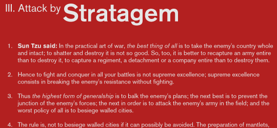

Typographic Times
A record of marvelous typography
Akzidenz Grotesk: Sans-Serif’s Start
Accidenz (sic) Grotesk was released by Berthold in Berlin in 1898, according to their own literature. It was obviously based on faces already offered by other foundries, some of which were later taken over by Berthold. One of the contemporaries of AG was Royal Grotesk from Theinhardt. In Berthold’s specimen booklet no. 429, which was most likely released in 1954, Akzidenz Grotesk Mager (light) was still referred to as Royal Grotesk, in brackets. Berthold acquired a typeface in 1908, (when they bought Ferd.Theinhardt) which they released as Akzidenz Grotesk Halbfett (medium). They kept adding weights, some of them from other faces, acquired from other foundries. Every foundry had a version of that type of face, more often than not available in a few sizes only. The original series remained quite divers, individual weights showing not much resemblance but in name. It was mainly a marketing and naming success. That only changed when they cut Series 57, and then Series 58, named for the years of release. These had some sizes (but not all) recut under the direction of Günter Gerhard Lange, who was their (freelance) artistic director at the time.
GG Lange always claimed that Berthold had taken some AG weights and sizes from Popplbaum in Vienna, and that is supposed to account for the release date of 1896 or 1898. Popplbaum was not bought by Berthold until 1926. Berthold did take different fonts from all the foundries they bought (and obviously also made deal without buying a foundry) and rename them until they got a family together which still showed the original influences, sometimes even from size to size. The deals between foundries (by 1924 Berthold had bought 17 foundries, in Prague, Riga, Stuttgart, Leipzig, Moscow and St. Petersburg) have never been fully researched, and neither has the complete history of Akzidenz Grotesk been written yet.
At the time it was created, using a sans serif font as a text face was unheard of: Akzidenz was intended strictly for display use. (The German “akzidenzschrift” means “display face”). It was probably based on stricter, “romantic” serifs of the period, such as Walbaum or Didot. This heritage gives Akzidenz (and its descendants, Helvetica, Univers, and the like) their characteristic shape. They are not geometric, like Futura—the letterforms are irregular, the curves not quite circular. But nor are they humanist: the line weight is uniform, and (like the serif forms Akzidenz is based upon) there is no attempt to mimic the stroke or eccentricity of the pen.
more or less stolen from typophile
- Recent Articles
-
The Future of Type Design
24 June 2009 | TypefacesThe eponymous design wizards at Hoefler & Frere-Jones discuss the past and future possibilities of type design.
-
New Type Art from Herb Lubalin
14 June 2009 | InspirationRecently discovered prints from the basement of the U&lc offices will thrill and amaze you!
-
Lovely Cuts
18 May 2009 | LetterformsWe survey type designers on their favorite letters to cut. The consensus choice? Read on to find out!
-
Flames of Love
10 May 2009 | InspirationSeb Lester's latest typograph print, "Flames of Love Burning Deep In My Heart for Eternity" is a work of art in every sense of the word.
-
Revisiting the Grid
1 May 2009 | LayoutGrid design is high fashion in design today. Here are five things you should keep in mind when putting together your grid layouts.
-
Making Type Behave Online
21 April 2009 | OutputTypography on the web is never easy. Here's our helpful guide to making your typography sing with nothing more than XHTML and CSS 3.
-
Beautiful Letterpress
3 April 2009 | OutputWell-made letterpress is breathtaking to behold. The folks at Boxcar Press are modern masters of it. Read our interview.
- Tags
- Advertising
- Blackletter
- Composition
- Digital Press
- Discussion
- Experimental
- Feature
- Font Editing
- Font Management
- Font
- Foundries
- Free Fonts
- Grid Design
- Historical Contexts
- In Concept
- In the Wild
- Interview
- Kerning
- Letterpress
- Linotype
- Logotype
- Modular Design
- Monotype
- New Design
- OpenType
- Ornaments
- Photopress
- Resources
- Revivals
- Sans-serif
- Script
- Serif
- Slab serif
- Software
- TrueType
- Tutorial
- Type Design
- Type History
- Typographs
- Web Typography